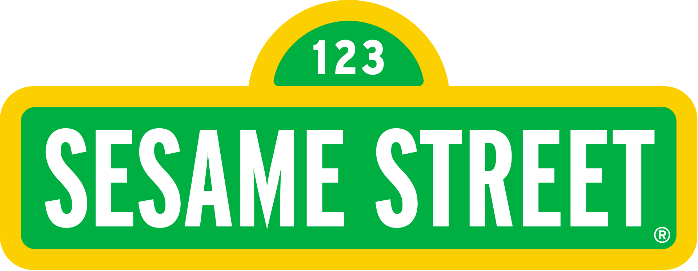

Sesame Street
is an American educational children's television series
that combines live-action, sketch comedy, animation and puppetry.
It is produced by Sesame Workshop  (known as the Children's Television Workshop (CTW) until June 2000)
and was created by Joan Ganz Cooney and Lloyd Morrisett.